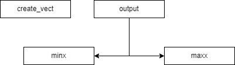
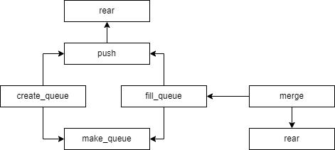
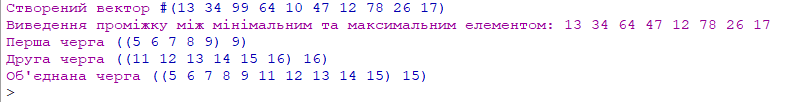

Виведення результату співпадає з умовами задачі, отже все правильно.
київський національний університет ім. Тараса Шевченка
факультет інформаційних технологій
кафедра програмних систем та технологій
Дисципліна
Функціональне програмування
Лабораторна робота №6
"Обробка структур типу векторів і матриць, стеків та черг мовами функціонального програмування "
Варіант 15
Виконав: Мухатасов Борис Євгенович
Перевірила: Ніколаєнко Анастасія Юріївна
Зміст
Мета
Опанувати теоретичні основи обробки структур типу векторів і матриць, стеків та черг мовами функціонального програмування та розробити програми їх реалізації
Умови задачі
Написати процедури, що обробляють вектори відповідно до правил векторної алгебри з індексацією елементів вектору та прямим доступом до елементів Написати процедури, що обробляють черги відповідно до правил FIFO (перший прийшов — перший пішов) та стеків за правилами LIFO (останній прийшов - перший пішов)
-
Створити вектор чисел. Вивести на екран елементи, які менші за значення максимального і більше за значення мінімального елементів.
-
Створити дві черги з різною кількістю елементів. Об’єднати черги, включивши в об’єднану чергу однакову кількість елементів з кожної вхідної черги.
Структура програми

Рис. 1 - HIPO діаграма до завдання №1

Рис. 2 - HIPO діаграма до завдання №2
Обгрунтування вибору середовища та мови функціонального програмування
Була обрана мова програмування Scheme, так як вона має легкий, зрозумілий синтаксис, який поюснюють на лекціях, практичних, а також рекомендована лектором. IDE - DrRacket. Головною перевагою для вибору данного середовища розробки є зручність та відсутність потреби у мережі інтернет
Код програми
(#%require (only racket/base random))
(define (minx vect)
(define ind 0)
(define (inside i)
(if (>= i (vector-length vect))
(vector-ref vect ind)
(begin
(if (< (vector-ref vect i) (vector-ref vect ind))
(set! ind i))
(inside (+ i 1)))))
(inside 0))
(define (maxx vect)
(define ind 0)
(define (inside i)
(if (>= i (vector-length vect))
(vector-ref vect ind)
(begin
(if (> (vector-ref vect i) (vector-ref vect ind))
(set! ind i))
(inside (+ i 1)))))
(inside 0))
(define (output vect)
(define mi (minx vect))
(define ma (maxx vect))
(define (inside i)
(if (< i (vector-length vect))
(begin
(if (and(> (vector-ref vect i) mi) (< (vector-ref vect i) ma))
(begin
(display (vector-ref vect i))
(display " ")))
(inside (+ i 1)))))
(inside 0))
(define (create_vect n)
(define res `())
(define (inside i)
(if (>= i n)
(list->vector res)
(begin
(set! res (append res (list(random 100))))
(inside (+ i 1)))))
(inside 0))
(define v (create_vect 10))
(display "Створений вектор ")
v
(display "Виведення проміжку між максимальним та мынымальним елементом ")
(output v)
;............................................................15.2.........................................................
(newline)
(define (front q) (car q))
(define (rear q)(cdr q))
(define (make-queue)
(define p (cons `()`() ))
(cons p p))
(define (null-queue? q)(and(eq? (front q) (rear q)) (eq? (car (front q)) '() )))
(define (push q e)
(define p (cons e '()))
(if (null-queue? q)
(begin (set-car! q p)
(set-cdr! q p)
)
(begin
(set-cdr! (rear q) p)
(set-cdr! q p)
) ) )
(define (create_queue n nmax)
(define res (make-queue))
(define (inside i)
(if (>= i nmax)
res
(begin
(push res i)
(inside (+ i 1)))))
(inside n))
(define (fill_queue lst)
(define res (make-queue))
(define (inside i)
(if (>= i (length lst))
res
(begin
(push res (list-ref lst i))
(inside (+ i 1)))))
(inside 0))
(define (merge q1 q2 n)
(define res `())
(define temp1 (front q1))
(define temp2 (front q2))
(define (inside i q)
(if (< i n)
(begin
(set! res (append res (list(list-ref q i))))
(inside (+ i 1) q))))
(inside 0 temp1)
(inside 0 temp2)
(fill_queue res))
(define q1 (create_queue 5 10))
(define q2 (create_queue 11 17 ))
(display "Перша черга ")
q1
(display "Друга черга ")
q2
(display "Об'єднана черга ")
(merge q1 q2 5)
Посилання на проект з вихідним кодом
GitHub проект з вихідним кодом до всіх лабораторнихСкріншоти результатів

Рис. 3 - Результат виконання завдання
Аналіз достовірності результатів
Висновки
В результаті роботи було вирішено два задання за допомогою мови Scheme. Було намальовано HIPO діаграми для кожного з завдань, проведено аналіз достовірності результатів, який показав що результати є вірними. Також вивчено стеки та вектори у функціональних мовах програмування, їх застосування та обробка.